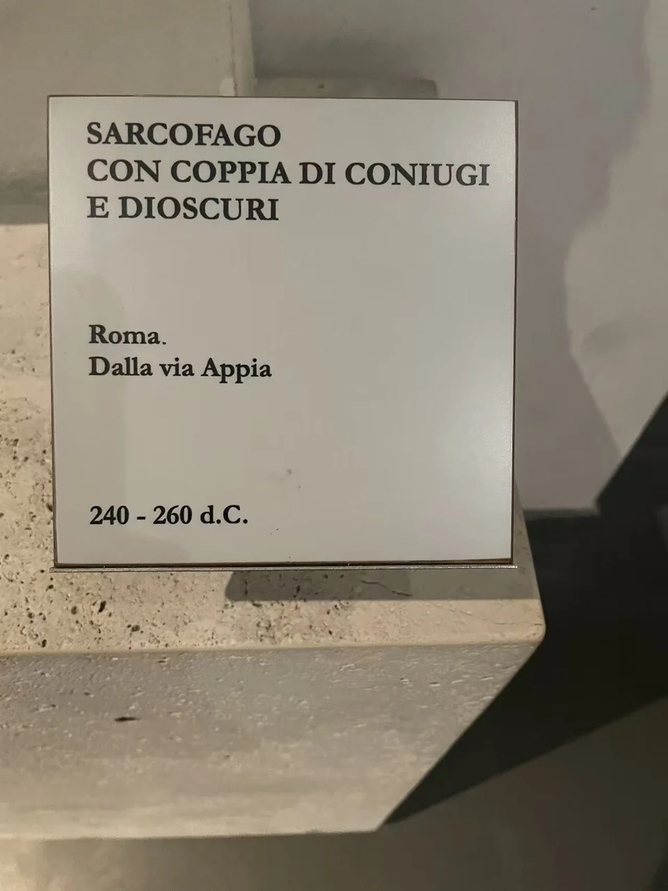

ROMAN SARCOPHAGI / R09
夫妇与狄俄斯库里双子石棺
中央夫妇安静并立，双子与马匹则把动作留在两端。

- 年代
- 240–260年
- 收藏
- 罗马国家博物馆
- 观看地点
- 罗马国家博物馆·马西莫宫 · 罗马
- 馆藏号
- 待核
- 发现地记录
- 罗马阿庇亚大道（现场展牌）
三组拱廊，三种节奏
浅柱与弧形顶部把前板分成三组：中央夫妇的长衣向下垂，两侧男子的身体与马首相邻，膝腿和手臂形成更开张的线条。现场展牌将两端人物识为狄俄斯库里双子。静止的夫妻肖像与神话人物的动作并置，构成这件前板的观看节奏。
保存下来的边界
不规则的上缘、缺失的肢体和残留柱子，使前板的建筑框架显得断续。展牌记240—260年、来自罗马阿庇亚大道；目前可核对到2013年马西莫宫图录第251项的书目信息，具体馆藏号仍未获得。 [8]
现场展签 · 1张

资料与来源
断代、收藏与文献说明
夫妇姓名尚无可靠记录。馆藏号留空；251是图录条目号。 [8]